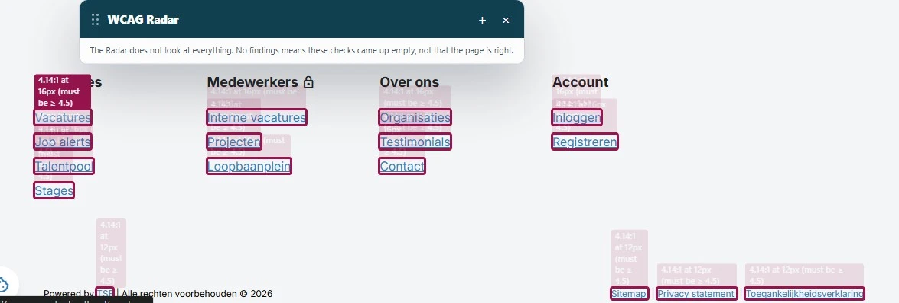

Tijdens het onderzoek kwamen we ook technische problemen tegen die buiten de scope van het contentonderzoek vallen. Die staan hieronder niet als bevinding beschreven:
- Een deel van de knoppen in dialoogvensters heeft geen toegankelijke naam.
- Een deel van de onderdelen is niet met het toetsenbord te bereiken.
- Een deel van de knoppen die inhoud openen en sluiten heeft geen
aria-expanded-attribuut.
#1 - Te weinig contrast van tekst

In de footer staan blauwe (#117cbd) links op een witte (#f4f5f6) achtergrond, zoals "Vacatures", "Job alerts" en "Talentpool". De contrastverhouding is 4,1:1. Dat is te laag, en niet alle bezoekers kunnen deze tekst goed lezen.
Zie ook:
- https://www.vooruitindrenthe.nl/talentpool: de link "Registreren" of "Mijn Account".
- https://www.vooruitindrenthe.nl/account: de link "Maak job alert".
- https://www.vooruitindrenthe.nl/vacatures/junior-beleidsadviseur-sociaal-domein/208b96cc-9514-4f4a-931c-6747e8878fc2: de link "Lees meer".
- Andere pagina's.
User story
Ik ben slechtziend. Als tekst te weinig contrast heeft met de achtergrond, kan ik die moeilijk lezen. Ik verwacht dat tekst genoeg contrast heeft om hem makkelijk te lezen.
Hoe te testen
Open de WCAG Radar en zet de optie "Contrast" aan. Tekst op een effen achtergrond met te weinig contrast wordt vanzelf gemarkeerd. Bij tekst op een foto of een kleurverloop meet je met de twee pipetten de kleur van de tekst en van de achtergrond. Normale tekst heeft minimaal 4,5:1 nodig, grote tekst (vanaf 24 px, of vanaf 18,7 px vet) minimaal 3,0:1.
Oplossing
Deze tekst is kleiner dan 19 px. Zorg voor een contrastverhouding van minimaal 4,5:1.